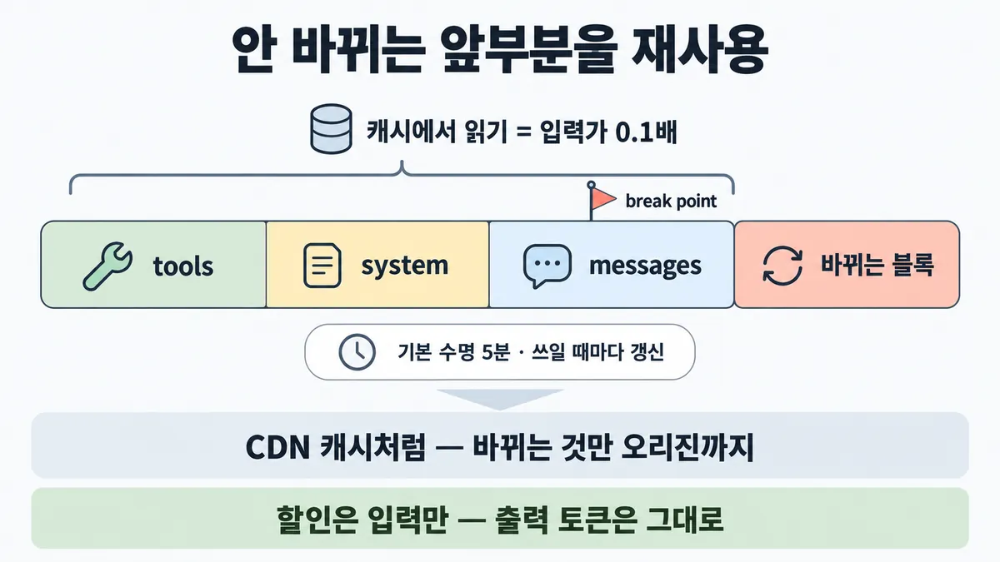
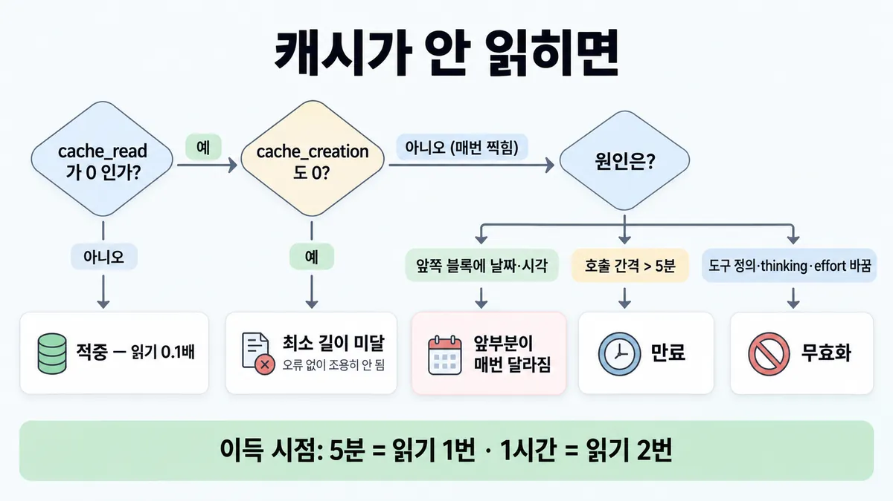
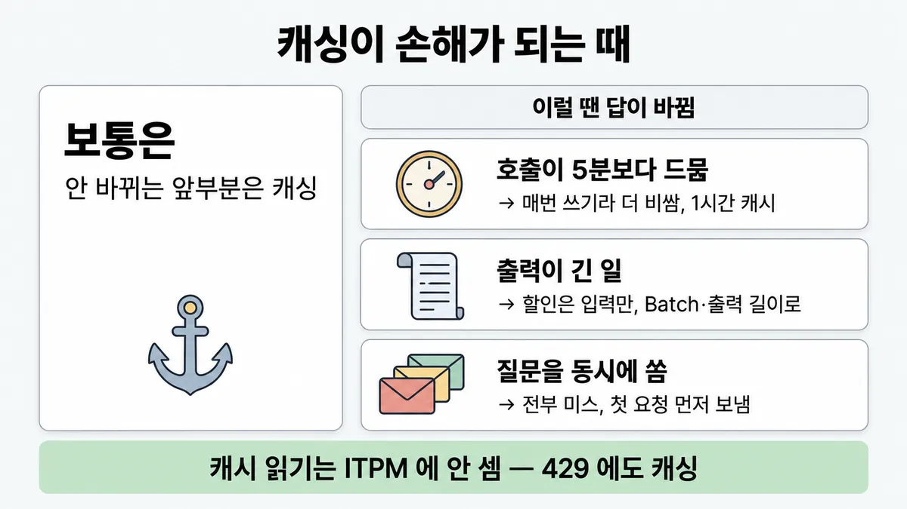

■ 프롬프트 캐싱
표시가 없는 문장은 공식 문서에서 확인한 내용이에요. 다른 표시는 읽는 법
왜 배우나 — 시험이 요구하는 것
시험 목표 2.5 프롬프트 재사용 · D2 모델·프롬프트 13%Implement prompt reuse strategies (caching, modular prompts, Skills)
이 개념으로 푸는 판단 (할 수 있어야 하는 것)
- 2.5① 8,000토큰 정책이 매 요청 반복되고 질문만 바뀐다 — 비용·지연을 함께 줄이려면? — 반복 접두부 재사용 (공식 샘플 2)
- 2.5② 캐싱을 켰는데 cache_read_input_tokens 가 계속 0 — 가장 먼저 의심할 곳은? — 캐시 미적중 원인 진단 순서
- 2.5③ 같은 앞부분 · 같은 틀 · 가끔 필요한 전문지식 — 각각 무엇으로 재사용하나? — 재사용 수단 고르기 (프롬프트 캐싱 / 모듈형 프롬프트·템플릿 / Agent Skills)
- 4.5② 보기마다 다른 최적화 — 이 시나리오의 레버는 무엇 하나? — 시나리오 단서 → 레버 하나 (캐싱 · 배치 · 라우팅/effort · 스트리밍)
- 1.6③ 한 건에 얼마, 한 달에 얼마? — 비용 축을 숫자로 — 요청당 비용으로 설계안 비교
- 3.4③ 트래픽이 늘자 429 가 난다 — 무엇을 보고, 캐싱이 도움이 되나? — 속도 제한 관측·대응 (응답 헤더 · 캐시 인지 ITPM)
- 2.4① 지식 문서를 통째로 넣을까, RAG 를 만들까? — 크기 기준으로 통째로+캐싱 vs RAG
- 3.8① 정책 모음이 12만 토큰이고 모든 상담에 재사용된다 — RAG 를 깔까, 통째로 넣을까? — 통째 컨텍스트 + 캐싱 vs RAG
한눈에
매번 똑같이 보내는 앞부분(prefix)을 저장해 두고 다음 요청부터 다시 안 읽음 → 첫 토큰 빨라지고 입력 비용 줄어듦. 기본 수명 5분(쓰일 때마다 무료 갱신), 1시간은 선택
할인은 입력만. 출력 토큰은 그대로 → 긴 답을 쓰는 일은 적중률이 높아도 총비용이 조금만 줄어듦 (출력 단가 = 입력의 5배)
비유 CDN 캐시. 안 바뀌는 정적 파일은 캐시에서, 바뀌는 것만 오리진까지


ELI5
매일 같은 동화책 앞부분을 읽어 주다가, 앞부분에 책갈피를 꽂아 두는 거예요.
- 다음 날엔 책갈피부터 읽어서 빨라요.
- 책갈피 꽂는 날은 조금 더 수고롭지만, 한 번만 다시 읽어도 본전이에요.
- 앞부분 글자가 하나라도 바뀌면 책갈피가 소용없어요.
- 5분 안 펼치면 책갈피가 빠져요(1시간짜리 책갈피는 더 비싸요).
개념 설명
원리
무엇을 저장하나
- 요청 앞부분(prefix)의 처리 결과. 다음 요청의 앞부분이 책갈피(break point)까지 100% 같을 때만 다시 씀.
- 앞부분 순서 =
tools→system→messages. 앞 칸이 바뀌면 그 칸과 뒤 칸이 전부 무효. - 쓰기는 break point 에서만 일어남. 읽기는 break point 에서 이전 블록 쪽으로 한 칸씩 거슬러 최대 20블록까지 이전 요청이 쓴 항목을 찾음 — 안정적인 내용을 알아서 찾아 주지 않음.
비용
- 쓰기 = 입력 단가 1.25배(5분) · 2배(1시간). 읽기 = 0.1배(최신 모델은 더 쌈). 출력은 할인 없음.
- break point 자체는 요금이 붙지 않음 — 몇 개를 꽂든 실제로 쓰고 읽은 토큰만 냄(최대 4개).
- 수명은 쓰일 때마다 무료로 갱신. 수명은 요청 시작 시점부터 셈(응답 생성 시간 포함).
왜 속도도 빨라지나
- 앞부분을 다시 처리 안 하니 첫 토큰까지 시간(TTFT)이 줄어듦. 처음 한 번의 미스도 없애려면
max_tokens: 0사전 워밍.
rate limit(속도 제한, 429)
- 대부분 모델에서 캐시 읽은 토큰은 ITPM 에 안 셈. 캐시 안 된 입력 + 캐시 쓰기만 셈 → 캐싱이 처리량도 늘림. 예외 = Haiku 3.5(읽기도 셈).
켜는 법 두 가지
- 자동 캐싱 : 요청 최상위
cache_control하나 → 마지막 캐시 가능 블록에 break point, 대화가 길어지면 자동으로 앞으로 옮김. 멀티턴의 출발점. - 명시 break point : 블록마다
cache_control. 바뀌는 빈도가 다른 칸을 따로 캐싱하거나, 끝 블록이 매번 바뀌는 구조일 때.
규칙과 판단


갈림길
② 증상으로 가르기 [2.5②]
cache_read_input_tokenscache_creation_input_tokens최소 길이 미달
최소 캐시 길이 미달부터 의심. 오류 없이 조용히 캐싱만 안 됨
앞부분이 매번 달라짐
날짜·타임스탬프를 break point 앞 블록에 → 앞부분이 매번 달라져 영영 적중 안 함
만료
캐시는 만들어지는데 다음 요청 전에 사라짐 → 호출 간격이 수명(5분)보다 긺
무효화
도구 정의 바꾸면 전부 무효 · thinking·effort 값 바꾸면 메시지 캐시 무효
다음 물음 — 수명?
③ 언제 이득 [4.5②] [1.6③]
읽기 1번부터
쓰기 1.25배
읽기 2번부터
쓰기 2배
① 순서 [2.5①]
안 바뀌는 건 앞
순서 = tools → system → messages
바뀌는 건 뒤
break point 는 요청마다 똑같은 마지막 블록에(바뀌는 블록 말고)
흐름
그림 속 이름·금액·시간·토큰 수는 예시예요. 공식 한도·동작은 카드 본문 값이 기준.
장면 글로 보기
칸 : 요청 → 캐시 → 모델
블록 : tools, system, messages, 바뀌는 블록 (바뀌는 것)
규칙 (캐시) : 매번 똑같이 보내는 앞부분만 저장 · 기본 수명 5분
질문 : 두 번째 요청은 캐시에서 읽힐까?
① 적중 ✓
- 시작 : 요청 — 쪽지 : 요청 1 / 앞부분 6,000토큰 / + "주문 1042 언제 와요?"
- 요청 1 : 요청 → 캐시 : 쓰기 1.25배 — 쪽지 : cache_creation: 6000 / cache_read: 0
- 요청 2 : 캐시 : 읽기 0.1배 ✓ — 쪽지 : cache_creation: 0 / cache_read: 6000
- 요청 2 : 캐시 → 모델 : 다시 안 읽음 — 쪽지 : 앞부분 6,000토큰 / (캐시에서)
- 요청 2 : 바뀌는 블록 → 모델 : 바뀌는 블록만 — 쪽지 : messages 끝 / "그럼 환불은요?"
- 끝 : 적중 — 읽기는 입력 단가 0.1배
② 날짜 앞에 → 미스 ≠
- 블록 : tools, 날짜 (바뀌는 것), system, messages, 바뀌는 블록 (바뀌는 것)
- 시작 : 요청 — 쪽지 : system 맨 앞 / "지금 시각 09:41:07" / + 정책 6,000토큰
- 요청 1 : 요청 → 캐시 : 쓰기 1.25배 — 쪽지 : cache_creation: 6000 / cache_read: 0
- 요청 2 : 날짜 : 앞부분이 매번 달라짐 ≠ — 쪽지 : "지금 시각 09:42:07"
- 요청 2 : 요청 → 캐시 : 쓰기 1.25배 · 읽기 0 ≠ — 쪽지 : cache_creation: 6000 / cache_read: 0
- 끝 : 미스 — 앞부분이 매번 달라져 영영 적중 안 함
③ 5분 넘김 → 만료 ≠
- 시작 : 요청 — 쪽지 : 09:00 요청 1 / 앞부분 6,000토큰
- 요청 1 : 요청 → 캐시 : 쓰기 1.25배 — 쪽지 : cache_creation: 6000 / cache_read: 0
- 타이머 : 캐시 : 기본 수명 5분
- 요청 2 : 요청 → 캐시 : 쓰기 1.25배 · 읽기 0 ≠ — 쪽지 : 09:07 요청 2 / cache_creation: 6000 / cache_read: 0
- 끝 : 만료 — 호출 간격이 수명(5분)보다 긺
나머지 규칙
-
rate limit(속도 제한) : 대부분 모델에서 캐시 읽은 토큰은 ITPM 에 안 셈(캐시 안 된 입력 + 캐시 쓰기만 셈) → 캐싱이 429 도 줄임. 예 2M ITPM · 적중 80% = 분당 입력 10M [3.4③]
-
재사용 수단 가르기 : [2.5③]
- 똑같은 앞부분 = 캐싱
- 같은 틀에 값만 바뀜 = 템플릿(모듈형 프롬프트)
- 가끔 필요한 전문지식 = Skills(평소엔 이름·설명 약 100토큰만, 본문은 쓸 때 로드) → ■ Agent Skills progressive disclosure
규칙 원문 ①②③ (갈림길로 그린 규칙)
-
안 바뀌는 건 앞, 바뀌는 건 뒤. 순서 = tools → system → messages. break point 는 요청마다 똑같은 마지막 블록에(바뀌는 블록 말고). 시작은 요청 최상위
cache_control하나 = 자동 캐싱, 명시 break point 는 최대 4개 [2.5①] -
적중이 계속 0 (
cache_creation_input_tokens·cache_read_input_tokens둘 다 0) → 최소 캐시 길이 미달부터 의심. 오류 없이 조용히 캐싱만 안 됨. 최소 = Haiku 4.5·Opus 4.5·4.6 → 4,096 / Opus 4.7 → 2,048 / Sonnet 4.5·4.6·5·Opus 4.8 → 1,024 / Opus 5·5.5·Fable 5·5.1 → 512 (2026-09-28 조회)그다음 : break point 가 바뀌는 블록에 있나 · TTL 지남 · 무효화(도구 정의 바꾸면 전부 무효 · 타임스탬프가 앞 블록에 있으면 매번 미스 · thinking·effort 값 바꾸면 메시지 캐시 무효) [2.5②]
증상으로 가르기
쓰기 읽기 뜻 0 0 최소 길이 미달 매번 찍힘 0 캐시는 만들어지는데 읽히지 않음 → 앞부분이 매번 달라져 영영 적중 안 함, 또는 호출 간격이 수명(5분)보다 길어 다음 요청 전에 사라짐 -
언제 이득 : 읽기는 입력 단가 0.1배 [4.5②] [1.6③]
수명 쓰기 이득 시점 5분 1.25배 읽기 1번부터 1시간 2배 읽기 2번부터 최신 모델은 읽기가 더 쌈 : Opus 5.5 0.05배(2026-09-22 출시) · Fable 5.1 0.025배(2026-09-01) 시험 뒤 변경 시험은 0.1배로 물을 가능성
더 깊이 : 판단 규칙 · 상황 변수 (설명)
판단 규칙
| 조건 | 답 | 근거 |
|---|---|---|
| 긴 고정 앞부분 + 짧게 바뀌는 질문, 비용·지연(latency) 둘 다 | 고정 내용을 앞에 두고 캐싱 | 가이드 샘플 2 정답 C |
| 멀티턴 대화 | 자동 캐싱부터 | prompt-caching |
| 끝 블록이 매번 바뀜(타임스탬프·요청별 문맥) | 명시 break point 를 요청마다 같은 마지막 블록에 | prompt-caching |
| 쓰기·읽기 둘 다 0 | 최소 캐시 길이 미달부터 의심 | prompt-caching |
| 쓰기는 매번 찍히고 읽기 0 | 앞부분이 매번 달라짐 · 수명 초과 · 20블록 밖 · thinking·effort 등 설정 변경 | prompt-caching |
| 호출 간격이 5분~1시간 | 1시간 캐시 | prompt-caching |
| 호출이 5분보다 자주 | 5분 캐시 유지(무료 갱신) | prompt-caching |
| 병렬 요청을 한꺼번에 보냄 | 첫 응답 뒤에 나머지 · 또는 max_ 사전 워밍 | prompt-caching |
| 429 가 남, 반복 앞부분이 큼 | 캐싱이 ITPM 을 줄임(한도 상향만이 답 아님) | rate-limits |
| 같은 앞부분 / 같은 틀에 값만 / 가끔 필요한 전문지식 | 캐싱 / 템플릿 / Skills | 카드 ⑤ · ■ Agent Skills progressive disclosure |
상황 변수
| 변수 | 값 | 답 쪽 | 등급 | 근거 |
|---|---|---|---|---|
| 모델별 최소 캐시 길이 | Fable 5.1 · Mythos 5.1 · Opus 5.5 · Opus 5 · Fable 5 · Mythos 5 = 512 | 짧은 프롬프트도 캐싱됨 | prompt-caching | |
| 〃 | Opus 4.8 · Sonnet 5 · Sonnet 4.6 · Sonnet 4.5 = 1,024 | — | ||
| 〃 | Opus 4.7 · Mythos Preview = 2,048 | — | ||
| 〃 | Haiku 4.5 · Opus 4.6 · Opus 4.5 = 4,096 | 짧으면 조용히 안 됨 | ||
| 읽기 배수 | 대부분 0.1배 · Opus 5.5 0.05배 · Fable 5.1·Mythos 5.1 0.025배 | 최신 모델일수록 읽기 쌈 | 시험 뒤 변경 2026-09-22 · 2026-09-01 | pricing · 릴리스 노트 |
| 호출 간격 | 5분 이내 | 5분 캐시 | 판단 규칙 7 | |
| 호출 간격 | 5분~1시간 | 1시간 캐시(쓰기 2배) | 판단 규칙 6 | |
| 호출 간격 | 1시간 넘음 | 캐싱 이득 없음 | 계산 | 뒤집히는 때 1 |
| 출력 비중 | 출력이 입력보다 훨씬 김 | 총비용 절감 폭이 작음 | 계산 | 뒤집히는 때 3 |
| 동시성 | 첫 요청과 동시에 여러 개 | 전부 미스 | ||
| 바꾼 설정 | 도구 정의 | 전부 무효 | ||
| 〃 | 웹 검색·인용 켜고 끔 · fast 모드 전환 | system + messages 무효 | ||
| 〃 | tool_ · 이미지 넣고 뺌 | messages 무효 | ||
| 〃 | thinking 설정 · effort 값 | messages 는 항상, tools·system 은 모델별 | ||
| 〃 | effort 를 기본값으로 명시 | 생략과 같음, 무효 아님 | ||
| 턴마다 붙는 블록 | 20개 넘음 | 두 번째 break point |
연습 문제
고객지원 Agent 가 1분마다 같은 정책 6,000토큰을 보낸다. 캐싱을 켰더니 cache_creation_input_tokens 는 요청마다 6000쓰기 매번인데 cache_read_input_tokens 는 늘 0읽기 0. 오류는 없고, 시스템 프롬프트 맨 앞에는 "지금 시각 09:41:07" 한 줄시각이 맨 앞이 있다. 무엇이 문제일까?
시험 대비
함정
- 비용 줄이려 정책을 잘라냄 / 과제 무시하고 제일 작은 모델 / 정책을 few-shot 블록으로 옮김 → 셋 다 오답 (공식 샘플 2)
- 날짜·타임스탬프를 break point 앞 블록에 → 앞부분이 매번 달라져 영영 적중 안 함
- 적중 0 인데 "누가 무효화했다"만 봄 → 최소 길이 미달을 놓침
- 손익분기를 "요청 2~3회"로 외움 → 5분 = 읽기 1번 · 1시간 = 읽기 2번
- "캐시 입력도 ITPM 똑같이 먹으니 한도 상향만" → 반대. 대부분 모델에서 캐시 읽은 토큰은 ITPM 에 안 셈
- Skilljar API 강의(2025 제작 추정)는 "수명 1시간 · 최소 1024 고정 · 자동 캐싱 없음" → 지금 docs 는 기본 5분 · 모델별 최소 · 자동 캐싱 있음(2026-02-19~)
신호
"Ordering stable content first and enabling prompt caching lets repeated prefixes be reused, reducing both time-to-first-token and per-request cost without discarding required context." (가이드 샘플 2)
"Cache prefixes are created in the following order: tools, system, then messages."
"Place the breakpoint on the last block that stays identical across requests."
"if both cache_creation_input_tokens and cache_read_input_tokens are 0, the prompt was not cached (likely because it did not meet the minimum length requirement)."
"caching pays off after one cache read for the 5-minute duration (1.25x write), or after two cache reads for the 1-hour duration (2x write)."
"For most Claude models, only uncached input tokens count toward your ITPM rate limits."


더 깊이 : 뒤집히는 때 · 오답 재료 (설명)
뒤집히는 때
1. 호출이 5분보다 드문 때
- 조건 : 같은 정책 앞부분 1만 2천 토큰(Sonnet 5 입력 $2)을 7분마다 한 번씩 씀, 한 시간 동안.
- 계산 : 캐싱 없음 = 호출당 1만 2천 × $2/1M = $0.024. 5분 캐시 = 매번 수명이 지나 매번 쓰기 1.25배 = $0.030 → 캐싱 안 한 것보다 25% 비쌈. 1시간 캐시 = 첫 쓰기 2배 $0.048 + 이후 읽기 0.1배 $0.0024 × 7번 ≈ $0.065, 캐싱 없음 8번 = $0.192 → 약 1/3.
- 전제 : 7분 간격 8번(0·7·…·49분) · 1시간 캐시는 읽힐 때마다 수명 갱신( 일반 규칙을 적용 — 추론) · 가격 = 2026-09-28 조회값.
- 등급 : 계산 (배수·수명은 확인)
- 근거 : prompt-caching · pricing
2. 최소 길이에 조금 못 미칠 때
- 조건 : Haiku 4.5 에 시스템 프롬프트 3,000토큰. 캐싱을 켰는데 적중 0, 오류도 없음.
- 판단 : Haiku 4.5 최소는 4,096 → 조용히 캐싱 안 됨. 공식은 "조금 모자라면 채워서 넘기는 게 유리한 경우가 많다"고 함.
- 계산 : 4,096 으로 채워 캐싱하면 첫 요청 4,096 × 1.25 = 5,120 단위, 이후 409.6 단위. 채우지 않으면 매번 3,000. 두 번째 요청까지 합 = 5,529.6 vs 6,000 → 두 번째부터 이득.
- 같은 3,000 을 Opus 5.5 에 보내면 최소 512 라 그냥 캐싱됨.
- 등급 : 계산 (최소 길이·채우기 권고는 확인)
- 근거 : prompt-caching
3. 출력이 긴 일
- 조건 : Sonnet 5(입력 $2 · 출력 $10), 캐싱되는 앞부분 1만 2천 토큰, 매번 적중.
- 계산 : 출력 1,500 이면 캐싱 없음 $0.024 + $0.015 = $0.039 → 캐싱 $0.0024 + $0.015 = $0.0174 = 55% 절감. 출력 6,000 이면 $0.024 + $0.06 = $0.084 → $0.0024 + $0.06 = $0.0624 = 26% 절감.
- 판단 : 할인은 입력만. 긴 보고서·코드 생성처럼 출력이 큰 일은 적중률이 높아도 총비용이 조금만 줄어듦 → 지문이 "출력 비용"을 문제로 들면 캐싱은 주 lever(조절 수단)가 아님(대신 볼 lever = Batch · 출력 길이 · 모델).
- 등급 : 계산
- 근거 : prompt-caching 표 ·(출력 생성엔 영향 없음)
4. 병렬로 한꺼번에 쏠 때
- 조건 : 문서 한 벌을 두고 질문 30개를 동시에 보냄.
- 판단 : 캐시 항목은 첫 응답이 시작된 뒤에야 쓸 수 있음 → 동시에 보낸 30개는 모두 미스(각자 쓰기). 첫 요청 하나 → 응답 시작 뒤 나머지, 또는
max_tokens: 0사전 워밍. - 계산 : 전부 미스면 30 × 1.25 = 37.5 단위 · 순서를 지키면 1.25 + 29 × 0.1 = 4.15 단위(앞부분 기준).
- 등급 : (동작) · 계산(단위)
- 근거 : prompt-caching
5. 최신 모델이라 손익이 바뀌나? — 안 바뀜
- 조건 : Opus 5.5(읽기 0.05배) · Fable 5.1(0.025배).
- 계산 : 5분 = 1.25 + 0.05 = 1.30 < 2 → 여전히 읽기 1번부터. 1시간 = 2 + 0.05 = 2.05 > 2 (읽기 1번은 손해), 2 + 0.10 = 2.10 < 3 → 여전히 읽기 2번부터. Fable 5.1 도 같음.
- 판단 : 읽기가 싸져도 손익 시점은 그대로, 이득 폭만 커짐. 시험(2026-07 기준)은 0.1배로 물을 가능성.
- 등급 : 계산 (시험 뒤 변경 — 2026-09-22 · 2026-09-01)
- 근거 : pricing · 릴리스 노트
6. 429 를 한도 상향 말고 캐싱으로
- 조건 : 한도 150만 ITPM, 입력의 90% 가 캐시 적중.
- 계산 : 캐시 읽기는 ITPM 에 안 셈 → 캐시 안 된 10% 가 150만이면 분당 총 입력 1,500만.
- 전제 : 캐시 쓰기는 무시할 만큼 드묾 · Haiku 3.5 가 아님.
- 등급 : 계산 (셈 규칙은 확인)
- 근거 : rate-limits · rate-limits-full(Haiku 3.5 예외)
오답 재료
| 오답 | 왜 끌리나 | 왜 틀리나 | 근거 |
|---|---|---|---|
| "정책을 앞 1,000토큰으로 잘라낸다" | 바로 싸짐 | 필요한 정책을 잃음 | 샘플 2 해설 "Truncation (A) loses needed policy" |
| "과제와 상관없이 제일 작은 모델" | 가장 싸 보임 | 품질 위험 | 샘플 2 해설 "downsizing blindly (B) risks quality" |
| "정책을 few-shot 예시 블록으로 옮긴다" | 위치를 바꾸면 효과 있을 듯 | 캐시되는 재사용 앞부분이 안 생김 | 샘플 2 해설 "relocating to few-shot (D) does not create a cacheable, reusable prefix" |
| "적중 0 = 누가 무효화했다(타임스탬프 등)" | 흔한 원인 | 쓰기·읽기 둘 다 0 이면 공식이 먼저 드는 건 최소 길이 미달 | prompt-caching |
| "손익분기는 요청 2~3회" | 쓰기 요청까지 셈 | 읽기로 세면 5분 = 1번 · 1시간 = 2번 | pricing |
| "캐시 입력도 ITPM 을 똑같이 먹으니 한도 상향만" | 다른 회사 TPM 방식 | 대부분 모델에서 캐시 읽기는 ITPM 에 안 셈 | rate-limits |
| "break point 를 많이 꽂으면 비싸짐" | 기능마다 요금이 붙을 것 같음 | break point 자체는 요금이 붙지 않음 | prompt-caching |
| "1시간 캐시가 항상 더 이득" | 오래가니까 | 5분보다 자주 쓰면 5분이 무료 갱신이라 더 쌈 | prompt-caching |
| "병렬 30개를 동시에 보내면 첫 요청 뒤 29개는 적중" | 같은 앞부분이니까 | 캐시는 첫 응답이 시작된 뒤에야 씀 | prompt-caching |
| "캐싱하면 출력 비용도 준다" | "비용 최대 90% 절감" 문구 | 할인은 입력만 | prompt-caching · 릴리스 노트(옛 문구) |
| "수명 1시간 · 최소 1024 고정 · 자동 캐싱 없음" | Skilljar API 강의(2025) | 지금은 기본 5분 · 모델별 최소 · 자동 캐싱(2026-02-19) | Skilljar 287770 · prompt-caching · 릴리스 노트 |
| "도구 하나 바꿨으니 messages 만 다시" | 도구는 뒤쪽 같음 | 도구 정의 변경은 전부 무효(맨 앞 칸) | prompt-caching |
참고
출처
- 가이드 목표 2.5 공식 시험 가이드 v1.0
- 샘플 2 공식 시험 가이드 v1.0
- docs prompt-caching
- pricing
- rate-limits
- agent-skills overview
- 릴리스 노트
- Skilljar API 287770
상태
- 시험 뒤 변경 1곳(③ 최신 모델 배수)
미해결
- 카드 ② 의 최소 길이 목록은 Haiku 4.5 · Opus 4.7 · Sonnet 4.5·4.6·5 만 적음 — 512(Opus 5.5 · Fable 5.1 등) · Opus 4.8 1,024 · Opus 4.6·4.5 4,096 이 빠져 있음. 카드 수정은 카드 담당 몫이라 여기엔 표로만 둠. 목록 2.5② 는 이 값들을 이미 적고 있음.
- 1시간 캐시도 "읽힐 때마다 수명 무료 갱신"인지 직접 문장 없음 —은 기본(5분) 문맥, pricing은 "이전 쓰기와 동일한 지속 시간"만. 뒤집히는 때 1 은 갱신된다고 가정.
- 시험 뒤 변경 후보 : 캐시 진단(
diagnostics) 정식 출시 2026-09-23(베타 2026-05-13) · 대화 중 도구 정의로 캐시 유지(inline-tools-2026-09-15베타, 2026-09-22). 시험(2026-07)이 물을 가능성은 낮음(추론). 근거 : 릴리스 노트 · prompt-caching. - rate-limits 표가 기존
ko/en-rate-limits.md에서 빠져 있어en-rate-limits-full.md(.md원본)를 새로 받음 — Haiku 3.5 예외는 122줄.